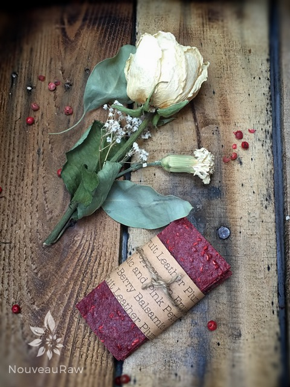

Plum-Berry Balsamic and Pink Peppercorn Fruit Leather

~ raw, vegan, gluten-free, nut-free ~
I had no idea how the flavors of plums, strawberries, balsamic vinegar, and peppercorns were going to taste, but I thought that I really couldn’t go wrong.
The balsamic vinegar that we use in our house is like a thick syrup and is very sweet with a tang in the background of flavor. LOVE it! To infuse the balsamic even further I took an eye dropper-full and made droplets over the top of the wet leather. Such fun in the kitchen!
There are few fruits that come in such a panorama of colors as the juicy sweet tasting plum. When plums are dried, they are known as prunes, which I am a fan of. I have been known to purchase large bottles of prune juice, pour it over ice, and enjoy the deep flavor.
One time as I went through the checkout line at the grocery store, the checker scanned my prune juice and looked at me with great sympathy and said, “Oh, I am sorry that you don’t feel well.” lol “I feel just fine, I just love prune juice!” She looked puzzled. :) Anyway, here are a few health benefits of plums…
Health Benefits of Plums
- Delicious, fleshy, succulent plums are low in calories and contain no saturated fats; but contain numerous health-promoting compounds, minerals, and vitamins.
- Certain health benefiting compounds present in the plum fruits, such as dietary fiber, and sorbitol, are known to help regulate the functioning of the digestive system and can ease constipation.
- Fresh plums are an excellent source of vitamin C, which is also a powerful natural antioxidant. Consumption of foods rich in vitamin-C helps the body develop resistance against infectious agents, counter inflammation, and scavenge harmful free radicals.
- This fruit also contains health-promoting flavonoid poly phenolic antioxidants such as lutein, cryptoxanthin, and zeaxanthin in significant amounts. These compounds help act as protective scavengers against oxygen-derived free radicals and reactive oxygen species (ROS) that play a role in aging and various disease processes. Zeaxanthin, an important dietary carotenoid selectively absorbed into the retinal macula lutea where it is thought to provide antioxidant and protective light-filtering functions.
- Plums are rich in minerals like potassium, fluoride, and iron. Iron is required for red blood cell formation. Potassium is an important component of cell and body fluids that helps controlling heart rate and blood pressure.
- Rich in the B-complex group of vitamins such as niacin, vitamin B-6, and pantothenic acid. These vitamins are acting as cofactors to help the body metabolize carbohydrates, proteins, and fats. They also provide about 5% RDA levels of vitamin K. Vitamin K is essential for many clotting factors to function in the blood as well as in bone metabolism and helps reduce Alzheimer’s disease in the elderly. {source}
 Ingredients:
Ingredients:
yields 5 cups puree
- 6 cups fresh, sliced, organic plums (roughly 7)
- 2 cups fresh, organic strawberries
- 2 Tbsp chia seeds, ground in spice grinder
- 1 Tbsp maple syrup
- 3 tsp balsamic vinegar
- 1/2 -1 tsp fresh ground pink peppercorns
- 1 dash Himalayan pink salt
Preparation:
- Select RIPE or slightly overripe plums and strawberries that have reached a peak in color, texture, and flavor.
- Prepare the fruit; wash and lightly pat dry. Remove stones from plums.
- Puree the fruit, chia, maple syrup, vinegar, ground peppercorns, and salt in the blender or food processor until smooth.
- Taste and sweeten more if needed. Keep in mind that flavors will intensify as they dehydrate.
- When adding a sweetener do so 1 tbsp at a time, and reblend, tasting until it is at the desired taste. It is best to use a liquid type sweetener.
- It is best to use a liquid type sweetener. Don’t use a granulated sugar because it tends to change the texture of the finished fruit leather.
- Allow the puree to rest for at least 10 minutes so the chia can do its thickening magic.
- Spread the fruit puree on teflex sheets that come with your dehydrator. Pour the puree to create an even depth of 1/8 to 1/4 inch. If you don’t have teflex sheets for the trays, you can line your trays with plastic wrap or parchment paper. Do not use wax paper or aluminum foil.
- Lightly coat the food dehydrator plastic sheets or wrap with a cooking spray, I use coconut oil that comes in a spray.
- When spreading the puree on the liner, allow about an inch of space between the mixture and the outside edge. The fruit leather mixture will spread out as it dries, so it needs a little room to allow for this expansion.
- Be sure to spread the puree evenly on your drying tray. When spreading the puree mixture, try tilting and shaking the tray to help it distribute more evenly. Also, it is a good idea to rotate your trays throughout the drying period. This will help assure that the leathers dry evenly.
- Dehydrate the fruit leather at 145 degrees (F) for 1 hour, then reduce temp to 115 degrees (F) for about 16 (+/-) hours. Flip the leather over about half way through, remove the teflex sheet and continue drying on the mesh sheet. Finished consistency should be pliable and easy to roll.
- Check for dark spots on top of the fruit leather. If dark spots can be seen it is a sign that the fruit leather is not completely dry.
- Press down on the fruit leather with a finger. If no indentation is visible or if the fruit leather is no longer tacky to the touch, the fruit leather is dry and can be removed from the dehydrator.
- Peel the leather from the dehydrator trays or parchment paper. If the fruit leather peels away easily and holds its shape after peeling, it is dry. If the fruit leather is still sticking or loses its shape after peeling, it needs further drying.
- Under-dried fruit leather will not keep; it will mold. Over-dried fruit leather will become hard and crack, although it will still be edible and will keep for a long time
- Storage: to store the finished fruit leather…
- Allow the leather to cool before wrapping up to avoid moisture from forming, thus giving it a breeding ground for molds.
- Roll them up and wrap tightly with plastic wrap. Click (here) to see photos on how I wrap them.
- Place in an air-tight container, and store in a dry, dark place. (Light will cause the fruit leather to discolor.)
- The fruit leather will keep at room temperature for one month, or in a freezer for up to one year.
Culinary Explanations:
- Why do I start the dehydrator at 145 degrees (F)? Click (here) to learn the reason behind this.
- When working with fresh ingredients, it is important to taste test as you build a recipe. Learn why (here).
- Don’t own a dehydrator? Learn how to use your oven (here). I do however truly believe that it is a worthwhile investment. Click (here) to learn what I use.
© AmieSue.com